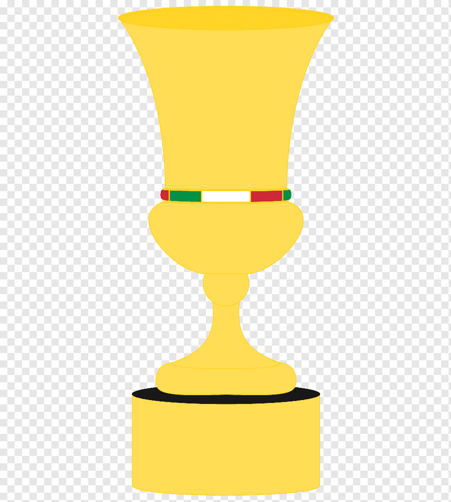
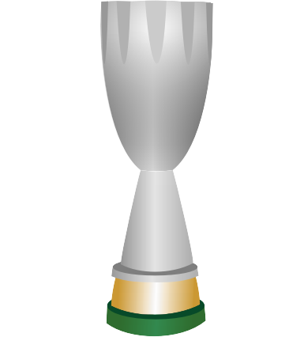
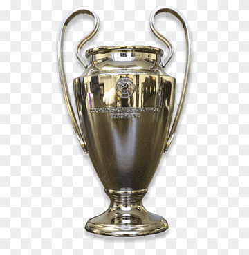
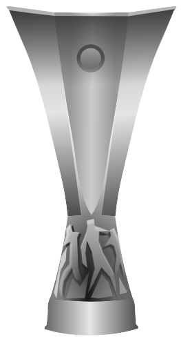

| Emblema |
Competição |
Títulos |
Anos |
|
Serie A |
19 |
(1901, 1906, 1907, 1950-51, 1954-55, 1956-57, 1958-59, 1961-62, 1967-68, 1978-79, 1987-88, 1991-92, 1992-93, 1993-94, 1995-96, 1998-99, 2003-04, 2010-11) |
|  |
Coppa Italia |
5 |
(1966-67, 1971-72, 1972-73, 1976-77, 2002-03) |
|  |
Supercoppa Italiana |
7 |
(1988, 1992, 1993, 1994, 2004, 2011, 2016) |
|  |
Liga dos Campeões da UEFA |
7 |
(1962-63, 1968-69, 1988-89, 1989-90, 1993-94, 2002-03, 2006-07) |
|  |
Liga Europa da UEFA |
2 |
(1990-91, 1993-94) |
 |
Mundial de Clubes |
4 |
(1969, 1989, 1990, 2007) |